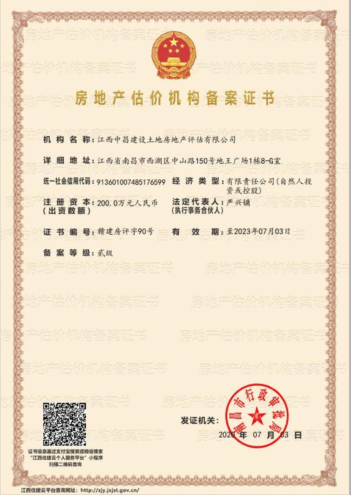
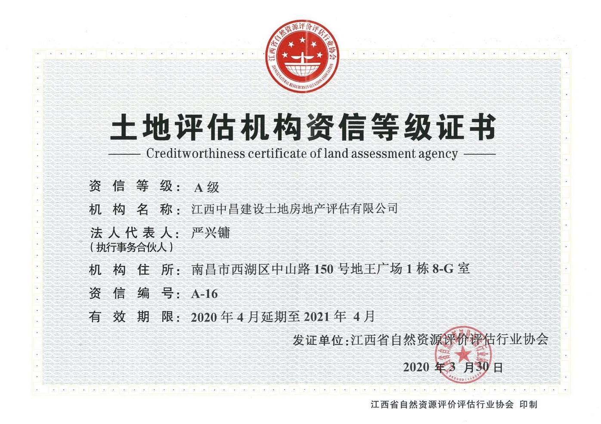

● 房地产价格评估
● 土地估价
● 房地产咨询、营销策划
● 房地产项目及信贷可行性研究
● 征收土地税费涉及的土地估价
● 土地及房地产各种业务代理等
● 工程造价咨询、代编工程概预算
● 承担各种代理综合服务
房地产估价机构备案证书（贰级）
土地评估机构资信等级证书（A级）
江西中昌建设土地房地产评估有限公司于2003年4月15日由南昌市工商行政管理局批准成立，注册资本200万元，公司地址：南昌市中山路150号地王广场写字楼八楼G座。经南昌市行政审批局（备案），备案等级：贰级（赣建房评字90号）；经江西省自然资源厅备案（备案编号：赣土备字[2020]0016号）；经江西省自然资源评价评估行业协会评定资信等级为A级。 公司主要从事房地产价格评估、土地评估、房地产咨询、营销策划、房地产项目及信贷可行性研究、征收土地税费涉及的土地估价、土地及房地产各种业务代理等，熟悉房地产交易、抵押及土地登记代理等业务相关流程。公司高层管理人员稳定，公司注册房地产估价师11人，注册土地估价师7人，另有5年以上从事房地产估价的专业技术人员多名，公司专业人员在同行中有较高的专业功底。南昌市房地产业协会连续多年授予我公司“先进估价机构”荣誉称号。
公司从业17年以来，一直坚持“独立、客观、公正”的原则，遵纪守法，诚信经营，以踏实、严谨的工作作风，为委托方提供了优质的估价服务，2019年获得了南昌市房地产业行业协会授予的先进房地产估价机构荣誉称号，经江西省自然资源评价评估行业协会评定资信等级A级。
电话： （0791）86236166 （0791）86231599
地址：南昌市西湖区中山路150号地王广场写字楼八楼G座
邮箱: ******
QQ: ******
微信：*******
●东湖区老动物园周边地块（青山南路二七北路南）旧城改造项目（征收面积约2.3万平方米）
●青云谱区航空路地块—南莲路周边旧城改造（城镇房）项目房屋征收评估（征收面积约0.6万平方米）
●青云谱区楞上村农房征收评估（征收面积约7.3万平方米）
●青云谱区墅溪路地块-上海南路沿线旧城改造（城镇房）项目房屋征收评估（征收面积约1.1万平方米）
●青云谱周边（洪都大道周边旧城改造二期）项目国有土地上房屋征收评估（征收面积约1万平方米）
●红谷滩中心片区控制性规划D4、D6地块城市棚户区改造房屋征收装修评估（征收面积约1.6万平方米）
●青云谱周边（徐坊客运站以南地块）房屋征收项目房屋征收评估（征收面积约3.9万平方米）
●红谷滩中心区“三九”商品房旧城改造项目国有土地上房屋征收评估（征收面积约1.0万平方米）
●东湖区东湖周边（阳明路以南一期-党家路叠山路地块、戴家巷民德路地块）、东湖周边（洪都北大道两侧-青山南路立交桥下南地块、青山南路立交桥下西地块）国有土地上房屋征收评估（征收面积约1.0万平方米）